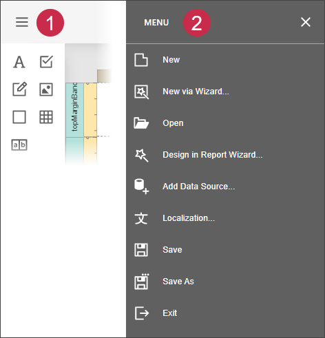

Main Menu
The Web Report Designer menu is invoked by clicking the menu button in the upper-left corner of the designer's user interfaces.

Note that some of the menu commands listed in this topic are only available when specific conditions are met. Visibility conditions for such commands are provided in the command description.
The menu contains the following commands.
| Command | Icon | Description |
|---|---|---|
| New | Creates a report and opens it in a new tab. This command is only available when the Report Designer is provided with a report storage. | |
| New via Wizard |  |
Invokes the Report Wizard to create a new report. This command is only available when the Report Designer is provided with a report storage. |
| Open | Invokes the Open Report dialog to retrieve a report from the list of saved reports and open it in a new tab. This command is only available when the Report Designer is provided with a report storage. | |
| Design in Report Wizard | Invokes the Report Wizard to edit the current report and generate the report layout. | |
| Add Data Source |  |
Invokes the Data Source Wizard to create a new data source and configure it. This command is only available when the Report Designer is provided with a set of default data connections. |
| Localization | Invokes the Localization Editor that allows you to change the text of the localizable textual properties for all the controls in a report. | |
| Save | Saves the current report. This command is only available when the Report Designer is provided with a report storage. | |
| Save As | Invokes the Save Report dialog to save the current report to the report storage under a new URL. This command is only available when the Report Designer is provided with a report storage. | |
| Exit | Closes the Web Report Designer. |